| kait kia1 | 善日 |   | interjection | greeting | hello |
| mua2 | 汝 |  | noun | | you |
| zep1 | 言 |  | verb | | to say |
| nan2 | 何 |  | noun | interrogative | what |
| zap2 ge | 彼等 |   | noun | | they |
| aim2 | 在 |  | verb-modifier | aspect marker | be ~ing |
| mua2 ge | 汝等 | | noun | | you guys, you all |
| ta | 終 |  | post-verbial / sentence-final particle | aspect marker | did |
| zau | 為 |  | verb | | to do |
| py | 力 |  | verb-modifier | modality marker | can |
| pai2 | 我 |  | noun | | I |
| yn2 | 乎 |  | sentence-final particle | question marker | ... ? |
| mok1 // naip2 | 行 // 労 |  // //  | verb-object compound | separable | to work |
| nan2 | 何 | | noun-modifier | interrogative | what kind of |
| zap2 | 彼 | | noun | | he/she |
| ie | 於 |  | coverb | takes a place / time | at |
| nan2 hue | 何処 |  | place word | interrogative | what place |
| naip2 | 労 | | verb | | to work |
| mok1 | 行 | | verb | takes a place | to go to |
| hia1 | 心 |  | clause-taker | | to want to |
| nan2 hue | 何処 | | noun-modifier | interrogative | of what place |
| cuk2 | 人 |  | noun | | person/people |
| a | 之 |  | noun-conjunction | | ~'s ~ |
| iam1 | 口 |  | verb | | to eat |
| iam1 ku | 口物 |  | verb-object compound | | to eat something |
| aim2 | 在 | | verb | | to exist |
| aim2 | 在 | | verb | | to be at {someone's} place |
| lua1 can2 | 耳識 |   | verb | | listen to |
| cei2 | 周 |  | coverb | takes a place / time | around, near |
| ka1 kia1 | 此日 |  | temporal word | | today, now |
| em | 如 |  | verb | | to be like |
| mok1 kait | 行善 | | verb | | for things to go well |
| hia1 sak2 | 心来 |  | verb | | to feel |
| hia1 | 心 | | clause-taker | | to feel that |
| mua2 | 汝 | | noun-modifier | | your |
| naip2 uo1 | 労件 |  | noun | | work |
| kait | 善 | | verb | | to be okay |
| mok1 ta1 | 行目 |  | verb | | to take a look |
| mun1 | 無 |  | verb-modifier | negative marker | not |
| nui2 cuk2 | 学人 |  | noun | | student |
| hia1 | 心 | | verb | | to have in one's mind / to love |
| hia1 kait | 心善 | | verb | | to like |
| naip2 | 労 | | noun | | work |
| ai2 sip1 | 冠国 |   | place word | | the Ai'ren Republic |
| ma1 | 大 |  | verb | | to be big |
| ∅ | ∅ |  | zero-copula | | to be |
| uep1 cuk2 | 淮人 |  | noun | | a Vefisaitē |
| uep1 sip1 | 淮国 | | noun | | the Vefisait Republic |
| nan2 | 何 | | noun | chiefly subject | who |
| em | 如 | | coverb | | in such a way |
| syt2 tun2 | 天神 |   | place word | | Makati (the capital of the Ai'ren Republic) |
| mok1 | 行 | | verb-modifier | modality marker | will |
| ai2 cuk2 | 冠人 | | noun | | a person of the Ai'ren Republic |
| ka1 hue | 此処 | | place word | | this place |
| ka1 | 此 | | noun | | this |
| pai2 | 我 | | noun-modifier | | my |
| mut2 | 家 |  | place word | | house |
| ma1 hue | 大処 | | place word | | big place |
| sak2 | 来 | | verb | takes a place | to be from |
| can2 | 識 | | question-clause-taker | | to know the answer to the question clause |
| sak2 | 来 | | verb | | to come |
| nan2 kak | 何時 |  | temporal word | interrogative | when |
| sak2 | 来 | | verb | takes a place | to come to |
| can2 sak2 | 識来 | | verb | | to understand |
| lua1 | 耳 | | verb | | to hear |
| ua | 而 |  | conjunction | | and |
| hi1 | 友 |  | noun | | friend |
| kit | 極 |  | verb-modifier | intensifier | very much |
| pai2 ge | 我等 | | noun | | we |
| can2 // zep1 | 識 // 言 | // | verb-verbalObject compound | | to understand what one says |
| mok1 | 行 | | post-verbial particle | | movement-marker of departure |
| zep1 | 言 | | question-clause-taker | | to tell someone the answer to the question clause |
| ak1 | 書 |  | noun | | book |
| ka1 | 此 | | noun-modifier | | this |
| ie | 於 | | coverb | | out of (a set) / choosing from (a set) |
| (a) | (噫) | ( ) ) | sentence-final particle | | (placed after 之 to mark that the sentence ends with a possessive) |
| zap2 | 彼 | | noun-modifier | | that |
| hia1 guk2 | 心受 |  | verb | | to want |
| tui2 {ie N} | 与 {於N} |  {N} {N} | verb | | to give {to someone} |
| ie | 於 | | coverb | | (indirect object of a verb) |
| a | 之 | | relativizer | | relativizer |
| be1 | 全 |  | noun | | anything |
| S {N} zep1 | S {N} 言 | S {N} | verb | | for S to say {to N} |
| at | 加 |  | coverb | | with |
| bap | 同 |  | verb-modifier | | also |
| a | 噫 | | sentence-final particle | | |
| hia1 | 心 | | imperative-verb-modifier | | I want you to |
| ut2 | 下 |  | post-verbial particle | politeness marker | (politeness) |
| tui2 | 与 | | clause-taker | | to allow A to V |
| kua2 | 筆 |  | name | | Qa (name) |
| ut2 {ie N} | 下 {於N} | {N} | verb | | to descend {to a place} |
| cy2 | 席 |  | place word | | seat |
| nui2 hue | 学処 | | place word | | school |
| aim2 {ie N} | 在 {於N} | {N} | verb | | to be {at a place} |
| tui2 // nui2 | 与 // 学 | // | verb-object compound | | to teach |
| tui2 nui2 cuk2 | 与学人 | | noun | | teacher |
| kait | 善 | | noun-modifier | | good |
| mok1 ta1 | 行目 | | verb | | to go see |
| mok1 | 行 | | verb | | to become |
| nui2 | 学 | | verb | | study |
| aim2 | 在 | | interjection | | yes |
| kait | 善 | | verb | | to be adequate |
| nan2 xit2 | 何故 |  | reason word | interrogative | why |
| ie et2 | 於一 |  | coverb | | for every ... |
| et2 | 一 | | noun-modifier | numeral | one |
| tauk1 | 文 |  | noun | | sentence |
| zep1 {ie N} | 言 {於N} | {N} | verb | | to say {to someone} |
| hue1 | 少 |  | noun | | a little thing |
| ly | 須 |  | verb-modifier | modality marker | should |
| ka1 kak | 此時 | | temporal word | | now |
| nan2 zuo1 | 何片 |  | temporal word | interrogative | which percent-day |
| aim2 taun1 | 在多 |  | verb | | to be plentiful |
| taun1 | 多 | | noun-modifier | | a lot of |
| su1 | 銭 |  | noun | | money |
| zep1 {N} {N} | 言 | | verb | | to tell {someone} {something} |
| cue1 | 或 |  | noun | | something |
| kait | 善 | | interjection | | yes |
| pua2 aim2 | 風在 |  | verb | | to be interesting |
| pui1 | 位 |  | quantity unit | | ~th ~ |
| kia1 | 日 | | temporal word | | day |
| ut2 | 下 | | noun-modifier | | next |
| xem1 | 月 |  | noun | | month |
| syt2 pua2 | 天風 | | noun | | weather |
| ly taun1 | 須多 | | verb | | to be busy |
| ie | 於 | | coverb | | at {someone's} place |
| ly taun1 | 須多 | | noun | | obligation / task / what one is busy about / what one must do |
| iei2 | 春 |  | name | | Yay (name) |
| xizi | xizi |   | name suffix | | Mr. ..., Ms. ... |
| ie | 於 | | coverb | takes a time | during, for |
| nun1 | 十 |  | noun-modifier | numeral | ten |
| lit1 py {ie N} | 入力 {於N} |  {N} {N} | verb | | to put effort {into N} |
| hia1 | 心 | | clause-taker | | to think that |
| put | 真 |  | verb | | to be true |
| zap2 | 彼 | | noun-modifier | | his/her |
| aim2 | 在 | | verb | takes a place | to be at |
| can2 | 識 | | verb | | to know |
| sit1 | 術 |  | noun | | method |
| pek2 zep1 | 牌言 |  | noun | | Pekzep |
| kua2 | 筆 | | verb | | to write |
| nau zui1 | 勿論 |   | interjection | | of course |
| ze1 | 其 |  | noun | | that |
| lin man1 | 清字 |   | noun | | Linzklā character |
| nui2 hi1 | 学友 | | noun | | classmate |
| su1 mun1 | 銭無 | | verb | | to have no money |
| ta ua | 終而 | | sentence-modifier | | in the end |
| xizi a | xizi噫 | | interjection | | excuse me |
| hop1 zep1 kik1 | 手言機 |   | noun | | cell phone |
| ian1 su1 {ie N} | 生銭 {於N} |  {N} {N} | verb | | to buy {N} |
| ie | 於 | | coverb | | pertaining to this amount of money |
| ian1 | 生 | | verb | | to go out |
| ty sak2 | 再来 |  | verb | takes a place | to return to |
| sau2 nui2 hue | 上学処 |  | noun | | university |
| sui1 | 使 |  | verb | | to use |
| kit | 極 | | noun-modifier | | a lot of |
| mam1 | 母 |  | noun | | mother |
| tim1 | 待 |  | clause-taker | | to wait for A to V |
| hia1 // xit2 | 心 // 故 {於N} | // {N} | verb-object compound | | to ask {someone} |
| zep1 zep1 | 言言 | | noun | | phrase |
| xa2 | 意 |  | noun | | meaning |
| ie | 於 | | coverb | | in such a way |
| tak1 | 衣 |  | noun | | clothing |
| lia1 | 琴 |  | name | | Lia (name) |
| hia1 kait | 心善 | | clause-taker | | to like to |
| sui1 su1 | 使銭 | | verb | | to buy |
| hia1 kait ie pau1 | 心善於別 |  | clause-taker | | to prefer to |
| tet | 唯 |  | verb-modifier | | only |
| et2 | 一 | | noun | | one thing |
| ik2 | 二 |  | noun | | two things |
| ai2 sip1 | 冠国 | | noun-modifier | | The Ai'ren Republic's |
| huep2 hia1 | 地心 |  | noun | | culture |
| uep1 sip1 | 淮国 | | noun-modifier | | The Vefisait Republic's |
| tut1 tut1 | 毎毎 |  | noun-modifier | | each one's |
| nam2 su1 hue | 開銭処 |  | noun | | open-air market |
| lip zep1 | 哩言 |  | noun | | Linepāine |
| hut2 | 始 |  | coverb | takes a time / place | beginning from, from |
| ge | 等 | | noun suffix | | (plural) |
| ie | 於 | | coverb | | because of |
| lip zep1 | 哩言 | | noun-modifier | | of Linepāine |
| pua2 aim2 {ie N} | 風在 {於N} | {N} | verb | | for N to be interesting |
| pek1 | 硬 |  | verb | | to be difficult |
| xizi xizi | xizi xizi | | interjection | | excuse me |
| ap1 | 四 |  | noun-modifier | numeral | four |
| pet2 | 星 |  | temporal word | | year |
| be1 | 全 | | noun-modifier | | all |
| can2 | 識 | | clause-taker | | to know that |
| kait | 善 | | verb-modifier | | well, proficiently |
| hia1 // huet | 心 // 闇 | //  | verb-object compound | | to be tired |
| mok1 | 行 | | clause-taker | | to become |
| pau1 huai2 | 別普 |  | verb-modifier | | especially |
| li1 | 倉 |  | noun | | computer |
| kua2 hue | 筆処 | | place word | | Quahua (a large city in the Ai'ren Republic) |
| hia1 po1 | 心道 |  | noun | | the desired way |
| nau hia1 | 勿心 | | interjection | | no need to care about it |
| ty sak2 | 再来 {於N} | {N} | verb | | to return to |
| ta1 | 目 | | verb | | see |
| mok1 lek1 | 行絵 |  | noun | | movie |
| sak2 | 来 | | verb | | to be open to public and reach us |
| tim1 | 待 | | verb | | to wait for |
| zuo1 | 片 | | quantity unit | | percent-day |
| mok1 // pet2 cei2 | 行 // 星周 | // | verb-object compound | | to age ~ years |
| bap | 同 | | noun-modifier | | the same |
| sue1 | 高 |  | name | | Zwuh (name) |
| hue1 // pet2 | 少 // 星 | // | verb-object compound | | to be ~ years younger |
| ik2 | 二 | | noun-modifier | numeral | two |
| ie | 於 | | coverb | | compared to |
| tam2 | 皇 |  | name | | Tam (name) |
| huap1 | 定 |  | verb | | to be ready |
| ta1 // ak1 | 目 // 書 | // | verb-object compound | | to read books |
| kuak1 | 父 |  | noun | | father |
| zui1 | 論 | | verb | | to discuss |
| hia1 kait ie | 心善於 | | clause-taking interjection | | thank you for |
| uaip2 | 助 |  | verb | | to help |
| mun1 | 無 | | verb | | to not exist |
| hue1 kak | 少時 | | temporal word | | a moment |
| hia1 kait | 心善 | | interjection | | thank you |
| taun1 | 多 | | verb | | to be plentiful |
| uaip2 | 助 | | clause-taker | | to help A V |
| hia1 guk2 | 心受 | | verb | | to need |
| uaip2 | 助 | | noun | | help |
| guk2 // xy1 nui2 | 受 // 裁学 | //  | verb-object compound | | to take an exam |
| gy1 | 層 |  | noun | | story (of a building) |
| kop1 | 試 |  | verb | | to try |
| can2 // hia1 | 識 // 心 | // | verb-object compound | | to understand [someone] |
| kia1 kia1 | 日日 | | temporal word | | every day |
| ian1 hok1 | 生寝 |  | verb | | to get up |
| ut2 kak | 下時 | | temporal word | | late time |
| iam1 // nua2 | 口 // 水 | //  | verb-object compound | | to drink |
| kit1 | 百 |  | noun-modifier | numeral | a hundred |
| su1 | 銭 | | noun | | zooh |
| nua2 suo2 | 水類 |  | noun | | liquid |
| hue1 | 少 | | noun-modifier | | a little |
| gak1 | 激 |  | post-verbial / sentence-final particle of manner | | quickly |
| aim2 mok1 | 在行 | | verb-modifier | aspect marker | to continue to |
| hio1 | 認 |  | clause-taker | | to accept that |
| huap1 | 定 | | noun | | decision |
| ki1 | 男 |  | noun | | male |
| hia1 mun1 a | 心無之 | | verb-modifier | | casually |
| ian1 mok1 | 生行 | | verb | | to leave |
| dat2 | 集 |  | noun | | province |
| hop1 | 手 | | verb | | to hold |
| lo | 立 |  | verb | | to stand |
| kop1 | 試 | | clause-taker | | to try to |
| py | 力 | | verb | | to be able to do {something} |
| py | 力 | | clause-taker | | allow (oneself) to V |
| zau // uo1 | 為 // 件 | // | verb-object compound | | to do thing |
| ka1 suo2 | 此類 | | noun-modifier | | this kind of, these kind of |
| ka1 | 此 | | nominative case marker | | as for ..., it ... |
| tau2 | 端 |  | noun | | limit |
| sip1 | 国 | | noun | | country |
| et2 ut2 | 一下 | | noun-modifier | | next |
| po1 | 道 | | noun | | possibility |
| uo1 | 件 | | noun | | matter, affair |
| y | 亦 |  | conjunction | | or |
| mun1 | 無 | | interjection | | no |
| huet cuk2 | 闇人 | | noun | | Phētās |
| lu2 | 新 |  | noun-modifier | | new |
| hop1 sit1 | 手術 | | noun | | how to choose |
| pau1 | 別 | | noun | | other thing |
| zep1 sit1 | 言術 | | noun | | way of talking |
| sui1 zep1 kik1 zep1 | 使言機言 | | verb | | to make a phone call to |
| zep1 kik1 | 言機 | | noun | | telephone |
| hok1 su1 hue | 寝銭処 | | noun | | hotel |
| ∅ | ∅ | | verb | takes a place | to be located in |
| kak | 時 | | temporal word | requires a modifier | time |
| huat1 zep1 | 互言 |  | verb | | to converse |
| kait | 善 | | clause-taker | | to be welcome to |
| iam1 su1 hue | 口銭処 | | place word | | restaurant |
| can2 kait | 識善 | | verb | | to be smart |
| put | 真 | | verb-modifier | | truly |
| aim2 hop1 | 在手 | | verb | | to own |
| naip2 hue | 労処 | | place word | | workplace |
| ki1 kat1 | 男子 |  | noun | requires a modifier | son |
| om2 | 三 |  | noun-modifier | numeral | three |
| cei2 | 周 | | verb | takes a place | to be close to |
| niep1 | 杯 |  | quantity unit | | ~ glass of ~ |
| nua2 | 水 | | noun | | water |
| zep1 // cei2 | 言 // 周 {N} | // {N} | verb-coverb compound | | to introduce {someone} |
| auk2 | 長 |  | verb | | to be long |
| auk2 | 長 | | noun | | length |
| om2 nun1 | 三十 | | noun-modifier | numeral | thirty |
| zuo1 | 片 | | quantity unit | | tswoh (5.54 cm; 2.18 inches) |
| i2 zep1 | 反言 |  | verb | | to answer |
| kait | 善 | | verb | | good, proficient |
| let1 xot1 | 雪季 |   | name | | Leshēl (name) |
| lok1 lia1 | 笛琴 |  | noun | | music |
| hia1 // put | 心 // 真 | // | verb | | to believe |
| mok1 // po1 | 行 // 道 | // | verb-object compound | | to conform to |
| hia1 | 心 | | noun | | feeling, mind |
| xi1 mok1 | 足行 |  | verb | | to walk |
| na1 | 静 |  | post-verbial / sentence-final particle of manner | | slowly |
| hui2 xa2 | 龍意 |  | name | | Fisha (name) |
| zep1 xa2 | 言意 | | noun | | meaning of what someone says |
| sia1 zui1 | 古論 |  | noun | | story, folklore |
| be1 ut2 | 全下 | | temporal word | | at last |
| xep2 | 謎 |  | noun | | problem, question |
| hue1 | 少 | | verb-modifier | | a little |
| ta1 mok1 | 目行 | | verb | | to look into (both literally and figuratively) |
| xep2 xit2 | 謎故 | | noun | | problem |
| sam1 mok1 | 急行 |  | verb | | to run |
| be1 sau2 | 全上 | | noun | | best thing |
| hua1 li2 | 挽虫 |   | name | | Falīa (name) |
| po1 | 道 | | noun | | road |
| kit kit | 極極 | | verb-modifier | intensifier | extremely |
| kait kait | 善善 | | verb | | to be great |
| iak1 | 律 |  | name | | Yark (name) |
| xo1 | 夏 |  | name | | Show (name) |
| hok1 | 寝 | | verb | | to be asleep / to go to bed |
| su1 hue | 銭処 | | noun | | shop, store |
| nan2 kak zuo1 | 何時片 | | temporal word | interrogative | which percent-day |
| su1 la1 | 銭軸 |  | noun | | company |
| ku | 物 | | noun | | thing |
| at | 加 | | noun-conjunction | | and |
| bap | 同 | | verb | | to be the same |
| nan2 pet2 | 何星 | | temporal word | interrogative | how many years |
| un1 | 五 |  | noun-modifier | numeral | five |
| tei1 muo1 | 叮止 |   | noun | | bus stop |
| ka1 xit2 | 此故 | | conjunction | | the reason is that |
| tet hia1 | 唯心 | | clause-taker | | to wish that |
| ut2 sa1 huok1 | 下女輩 |   | noun | | younger sister |
| tu2 gau2 su1 hue | 遊刀銭処 |   | noun | | toy store |
| zat1 | 怖 |  | verb | | to be scared of |
| sue1 hue | 高処 | | place word | | heights, high place |
| pai2 ge | 我等 | | noun-modifier | | our |
| ze1 | 其 | | noun-modifier | | that |
| ta lit1 | 終入 | | verb | | to shut down, to stop operating, to disappear |
| su1 li1 | 銭倉 | | noun | | bank |
| mun1 | 無 | | noun | | nothing |
| mok1 | 行 | | coverb | | till, until |
| mak2 | 値 |  | noun | | number |
| ho1 ie | 豊於 |  | verb | | to be full of |
| syt2 tui2 | 天与 | | noun | | talent |
| ty can2 sak2 | 再識来 | | verb | | to remember |
| ty can2 sak2 | 再識来 | | clause-taker | | to remember that |
| sin1 | 名 |  | noun | | name |
| ho | 軟 |  | verb-modifier | | easily |
| hia1 huet | 心闇 | | noun | | tiredness |
| guk2 | 受 | | verb | | to obtain |
| ho | 軟 | | verb | | to be easy, to be simple |
| zep1 ak1 | 言書 | | noun | | dictionary |
| ie | 於 | | coverb | | in {someone's} viewpoint, as for {someone} |
| ie nan2 kak | 於何時 | | post-verbial / sentence-final particle | | how many times |
| nan2 kak auk2 | 何時長 | | temporal word | interrogative | how long |
| zep1 ian1 ie | 言生於 | | verb | | to introduce to {someone} |
| mam1 kuak1 | 母父 | | noun | | parents |
| pet2 ho1 | 星豊 | | verb | | to be old |
| giau1 zuo1 | 門片 |  | noun | | visa |
| sau2 kak | 上時 | | temporal word | | past |
| xo2 | 錘 |  | verb | | to be important |
| aik2 dop1 | 光島 |   | noun | | Ekadon island |
| xuo1 | 花 |  | noun | | flower |
| cai1 kait | 嗅善 |  | verb | | to smell good |
| tuai2 | 遠 {於L} |  {L} {L} | verb | | to be far {from L} |
| em | 如 | | verb-modifier | | seemingly |
| nau | 勿 | | imperative-verb-modifier | | I ask you not to |
| hop1 | 手 | | clause-taker | | to hold so that S V |
| giau1 | 門 | | noun | | door |
| nam2 | 開 | | verb | | open |
| sau2 ut2 // ta mun1 | 上下 // 終無 | // | compound | | forever |
| xy1 // bap | 裁 // 同 {N} | // {N} | verb-coverb compound | | to treat ... as N |
| hem1 | 美 |  | verb | | to be beautiful |
| man1 | 字 | | noun | | character, letter, alphabet |
| hem1 hue | 美処 | | place word | | beautiful place |
| can2 kait | 識善 | | verb | | to understand [something] well |
| lin | 清 | | verb | | to be flawless and beautiful, to be clean |
| sa1 kat1 | 女子 | | noun | requires a modifier | daughter |
| cei2 | 周 | | verb | | to turn to a direction |
| ky1 | 右 |  | noun | | right (direction) |
| kaun1 | 車 |  | noun | | car |
| pau1 | 別 | | coverb | | except for, excluding |
| no1 | 酒 |  | noun | | alcohol |
| at | 加 | | verb | | to add |
| a | 之 | | noun-conjunction | | (apposition) |
| kuai1 | 翰 |  | name | | Kwai (name) |
| ut2 // ta1 nua2 | 下 // 目水 | // | verb-object compound | | cry |
| hia1 put ie | 心真於 | | verb | | to believe |
| pia2 | 囲 |  | noun | | room |
| pia2 mak2 | 囲値 | | noun | | room number |
| xy1 nui2 | 裁学 | | noun | | exam |
| hut2 | 始 | | verb | | to begin |
| hut2 | 始 | | clause-taker | | to begin to |
| bo1 | 満 |  | verb | | to be full, to be satisfied |
| mok1 lek1 bu1 | 行絵箱 |  | noun | | television |
| be1 huet | 全闇 | | temporal word | | all night |
| xau1 | 歌 |  | verb | | to sing |
| xau1 | 歌 | | noun | | song |
| hem | 即 |  | conjunction | | then |
| mot2 | 壊 |  | verb | | to die |
| hia1 sak2 em | 心来如 | | clause-taker | | to feel like |
| hei2 | 貧 |  | verb-modifier | | a little bit |
| ni1 | 小 |  | noun-modifier | | small, little |
| pa2 | 犬 |  | noun | | dog |
| gak1 gak1 | 激激 | | post-verbial / sentence-final particle of manner | | very very quickly |
| xem1 | 月 | | name | | Shum (name) |
| iam1 ku | 口物 | | noun | | food |
| y mun1 | 亦無 | | interjection | | isn't it? / no? / doesn't he? |
| zip1 | 失 |  | verb | | to lose |
| tet | 唯 | | noun-modifier | | only |
| hia1 kait | 心善 | | verb | | to be happy |
| put uo1 | 真件 | | noun | | news |
| hia1 kait a | 心善之 | | verb-modifier | | happily |
| taun1 | 多 | | post-verbial / sentence-final particle of manner | | hard, with effort |
| tut1 | 毎 | | noun | requires a modifier | each |
| et2 sau2 kia1 | 一上日 | | temporal word | | yesterday |
| hut2 | 始 | | verb | takes a place | to leave |
| ki1 ut2 huok1 | 男下輩 | | noun | | younger brother |
| bap | 同 | | coverb | | as much as |
| sau2 pet2 | 上星 | | quantity unit | | ~ years ago |
| huat1 hia1 | 互心 | | noun-modifier | | pertaining to love |
| mun1 put | 無真 | | noun | | lie, false information |
| kuai1 | 謝 |  | verb | | to apologize |
| sak2 | 来 | | post-verbial particle | | movement-marker of arrival |
| net2 | 六 |  | noun-modifier | numeral | six |
| zep1 zep1 // cei2 | 言言 // 周 {N} | // {N} | verb-coverb compound | | to introduce {someone} |
| ta1 kik1 | 目機 | | noun | | camera |
| hop1 pua2 | 手風 | | verb | | succeed |
| cuop2 pua2 | 声風 |  | noun | | news |
| kak | 時 | | noun | | spare time |
| ua | 哇 |  | interjection | | oh |
| cei2 ka1 | 周此 | | post-verbial particle of manner | | partially |
| sep2 sit1 cuk2 | 癒術人 |  | noun | | doctor |
| ho1 nim2 | 豊族 |  | noun-modifier | | multiethnic |
| syt2 tun2 sau2 nui2 hue | 天神上学処 | | noun | | Zyuttoon University |
| hue1 kak | 少時 | | temporal word | | time of youth |
| let1 su1 | 雪銭 | | noun | | Yuesleone Ledge |
| kit1 ue1 | 百万 |  | noun-modifier | numeral | million |
| ho1 | 豊 | | verb | | to be rich |
| zau kak | 為時 | | noun | | time to do something |
| ta1 tum1 | 目甘 |  | verb | | to be pretty, to be cute |
| tak1 | 衣 | | noun | | cloth |
| tum1 | 甘 | | verb | | to be pretty, to be cute |
| gak1 a | 激之 | | verb-modifier | | soon |
| syt2 aik2 | 天光 | | noun | | brightness of the sky |
| man1 dat2 | 字集 | | noun | | words |
| lit1 sip1 ak1 | 入国書 | | noun | | passport |
| cet2 | 机 |  | noun | | desk |
| et2 ut2 kia1 | 一下日 | | temporal word | | tomorrow |
| nan2 mak2 zep1 | 何値言 | | noun | | how many languages |
| zep1 | 言 | | noun | requires a modifier | language |
| can2 // zep1 | 識 // 言 | // | verb-object compound | | to understand [someone]'s language |
| kik1 lek1 | 機絵 | | noun | | photograph |
| uai1 | 将 |  | noun | | boss |
| nom2 | 八 |  | noun-modifier | numeral | eight |
| mak2 | 値 | | quantity unit | | ~ number of ~ |
| syt2 nua2 | 天水 | | noun | | rain |
| ty zau | 再為 | | verb | | to redo |
| ty | 再 | | verb-modifier | | again |
| cue1 cuk2 | 或人 | | noun | | someone |
| mok1 lit1 | 行入 | | verb | | to enter, to go in |
| xit2 | 故 | | reason word | requires a modifier | reason |
| kan1 | 火 |  | verb | | to be hot |
| u1 giau | 訴門 |  | postmodifier of degree | | too much |
| sa1 sau2 huok1 | 女上輩 | | noun | | older sister |
| kua2 | 筆 | | verb | | pen, writing utensil |
| co1 | 散 |  | verb | | to scatter |
| maun1 | 馬 |  | noun | | horse |
| in2 giau1 | 閉門 |  | verb | | to close, to cease operation, for a facility to stop operating for the day |
| nim2 | 族 | | noun | | ethnic group |
| tam2 dop1 | 皇島 | | noun | | Atalam Island |
| sa1 | 女 | | noun | requires a modifier | wife |
| hok1 | 寝 | | noun | | sleep |
| pet2 hue1 | 星少 | | verb | | to be young |
| em | 如 | | coverb | | as if it were |
| mun1 hop1 | 無手 | | verb | | to not have |
| pau1 ua | 別而 | | conjunction | | but, however |
| ma1 su1 | 大銭 | | verb | | to be expensive |
| tai | 咍 | 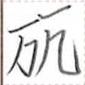 | sentence-final particle | | oh my, wow, holy cow (used when being strongly emotional) |
| cei2 zep1 | 周言 | | verb | | to translate |
| cei2 zep1 cuk2 | 周言人 | | noun | | translator |
| kan1 | 躍 | 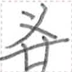 | verb | | to jump |
| sue1 | 高 | | post-verbial / sentence-final particle of manner | | high |
| son1 | 前 | 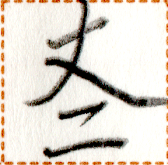 | noun suffix | | in front of |
| lok1 | 寒 |  | verb | | to be cold |
| ne2 | 猫 |  | noun | | cat |
| ki1 | 男 | | noun | requires a modifier | husband |
| syt2 | 天 | | place word | | sky |
| nuok2 | 青 | 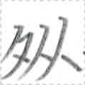 | verb | | to be blue |
| mok1 | 行 | | verb | requires an object | to operate a vehicle or any means of transportation |
| mi2 | 引 |  | verb | | to pull |
| non1 | 悪 |  | noun-modifier | | bad |
| ∅ | ∅ | | relativizer with noun | | relativizer with noun |
| uep1 zep1 | 淮言 | | noun | | Vefisaitē language |
| huok1 dop1 | 輩島 | | noun | | Pokyut island |
| gek | 肉 |  | noun | | meat |
| muo1 | 止 | | clause-taker | | to stop ~ing |
| puak1 | 叫 | 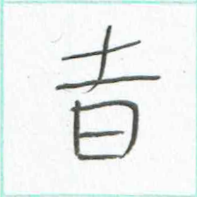 | verb | | to shout |
| ki1 sau2 huok1 | 男上輩 | | noun | | older brother |
| tu2 xi1 mok1 | 遊足行 | | verb | | to take a walk, to take a leisurely stroll |
| mok1 | 行 | | verb | | to be operating |
| lo | 立 | | verb | | to build |
| hau2 | 笑 |  | verb | | to laugh |
| hup1 xi1 | 木足 |  | noun | | tree root |
| hup1 | 木 | | noun | | tree |
| xep2 | 謎 | | verb | | to be strange |
| xep2 uo1 | 謎件 | | noun | | strange issue |
| ze1 kak auk2 | 其時長 | | temporal word | | that long |
| sa1 ut2 huok1 | 女下輩 | | noun | | younger sister |
| kia1 pet2 | 日星 | | noun | | the sun |
| mun1 cuk2 | 無人 | | noun | | no one |
| ze1 hue | 其処 | | place word | | that place |
| ni1 su1 | 小銭 | | verb | | to be cheap |
| am zie1 | 御広 |   | verb | | to advertise |
| sia1 | 古 | | verb | | to be old |
| ni1 | 小 | | verb | | to be small, to be little |
| huok1 | 輩 | | noun | | sibling |
| nin1 | 紙 |  | noun | | some paper, a piece of paper |
| zap2 ge | 彼等 | | noun-modifier | | their |
| lit1 {ie N} | 入 {於N} | {N} | verb | | to enter {N} |
| kat1 | 子 | | noun | | child |
| tia2 | 茶 |  | noun | | tea |
| xuo1 tia2 | 花茶 | | noun | | flower tea |
| naip2 hi1 | 労友 | | noun | | coworker |
| ket | 常 |  | verb-modifier | | always |
| tin1 | 己 |  | noun-modifier | | one's own |
| sa1 hi1 | 女友 | | noun | | female friend |
| saup1 | 獣 | 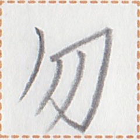 | noun | | animal |
| tua1 | 果 |  | noun | | fruit |
| ty zep1 | 再言 | | verb | | to say again |
| pau1 sip1 | 別国 | | noun | | foreign country |
| pek2 zep1 zep1 cuop2 | 牌言言声 | | noun | | Pekzep pronunciation |
| zep1 cuop2 | 言声 | | noun | | pronunciation |
| lip zep1 zep1 cuop2 | 哩言言声 | | noun | | Linepāine pronunciation |
| lua1 can2 | 耳識 | | clause-taker | | to have heard that |
| io1 | 直 |  | verb | | to be straight |
| xi1 | 足 | | noun | | leg, foot |
| ie | 於 | | coverb | takes a verb | in order to |
| lin mok1 | 清行 | | verb | | to clean |
| kan1 | 火 | | noun-modifier | | hot |
| be1 cuk2 | 全人 | | noun | | everyone |
| hia1 co1 | 心散 | | noun | | death |
| pok | 色 |  | noun | | color |
| xem1 pok | 月色 | | noun | | color yellow |
| ian1 giau1 | 生門 | | noun | | exit |
| tyn1 | 左 |  | place word | | on the left |
| nan2 mak2 | 何値 | | noun-modifier | | how many |
| nui2 hi1 dat2 | 学友集 | | noun | | people in a class |
| ta1 | 目 | | clause-taker | | to see |
| mok1 // yp | 行 // 後 | //  | verb-object compound | | to chase |
| tat2 | 体 |  | noun | | body health |
| cy2 | 席 | | verb | | to sit down |
| io | 王 | 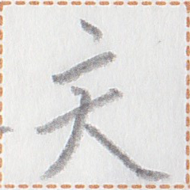 | noun | | king, leader |
| det tia2 | 種茶 |  | noun | | coffee |
| im1 | 毛 |  | noun | | fur, hair, bristle |
| mo1 | 米 |  | noun | | rice |
| pet2 | 星 | | name | | Putt (name) |
| sau2 nui2 hue cuk2 | 上学処人 | | noun | | university student |
| lu2 pet2 kait sak2 | 新星善来 | | interjection | | Happy New Year! / Happy Birthday! |
| huat1 | 互 | | verb-modifier | | to each other, mutually |
| dop1 | 島 | | noun | | island |
| kan1 puat2 | 火奮 |  | verb | | to be angry |
| hia1 non1 | 心悪 | | verb | | to hate, to dislike |
| zat1 | 怖 | | clause-taker | | to be afraid of doing |
| lup1 muak1 | 鳥船 |   | noun | | airplane, aircraft |
| cuop2 taun1 | 声多 | | verb | | to be noisy |
| huep2 | 地 | | noun | | ground, land |
| sui1 | 使 | | coverb | | using, by means of, with |
| xo1 | 夏 | | noun | | summer |
| iat1 | 冬 |  | noun | | winter |
| dat2 | 集 | | verb | | to bring [something] together |
| be1 | 全 | | noun suffix | | all of |
| tu2 | 遊 | | verb | | to play |
| tat2 ho1 | 体豊 | | verb | | to be fat |
| sep // su1 | 享 // 銭 |  // // | verb-object compound | | to earn money |
| kun2 | 付 |  | verb | | to wear, to put on |
| mui1 | 魚 |  | noun | | fish |
| nut2 | 川 | 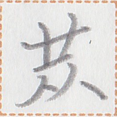 | noun | | river |
| nut2 nua2 | 川水 | | noun | | river water |
| dit1 | 貝 | 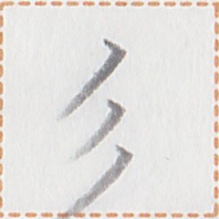 | noun | | shellfish |
| tuik1 kait | 味善 |  | verb | | to be delicious |
| no1 hue | 酒処 | | place word | | bar |
| kok1 | 赤 |  | noun-modifier | | red |
| kaik | 戦 |  | verb | | to fight |
| be1 huep2 | 全地 | | noun | | world |
| po1 lek1 | 道絵 | | noun | | map |
| lit1 nua2 | 入水 | | verb | | to go into the water |
| muak1 | 船 | | noun | | ship |
| ut2 | 下 | | post-verbial particle | | movement-marker of descent |
| kut2 | 撃 |  | verb-modifier | intensifier | in a sudden manner |
| hup1 saup1 | 木獣 | | noun | | rabbit |
| pau1 | 別 | | noun | requires a modifier | the difference (between ~) |
| huet | 闇 | | verb | | to be dark |
| po1 im1 | 羊毛 |  | noun | | wool |
| po1 saup1 | 羊獣 | | noun | | sheep |
| sy2 | 石 |  | noun | | rock, stone |
| pek1 | 硬 | | verb | | to be physically hard |
| tam2 pok | 皇色 | | noun | | dark green |
| gau2 nua2 | 刀水 | | place word | | Gowner (a large city in the Ai'ren Republic, located in Quahua Province) |
| ik2 ut2 kia1 | 二下日 | | temporal word | | the day after tomorrow |
| tum1 hua1 | 甘挽 | | noun | | powder sugar |
| tum1 | 甘 | | verb | | to be sweet |
| bet2 // hia1 | 圧 // 心 |  // // | verb-object compound | | to force an action against one's will |
| so1 sip1 | 祖国 |  | noun | | country inherited from ancestors, home country |
| zie1 aim2 | 広在 | | verb | | to be ubiquitous, to be everywhere |
| na1 | 静 | | verb | | to be silent |
| pua2 | 風 | | noun | | wind |
| hei2 | 貧 | | verb | | to be poor |
| nun1 et2 | 十一 | | noun-modifier | numeral | eleven |
| iei2 | 春 | | noun | | spring season |
| nua2 aim2 | 水在 | | verb | | to be fresh |
| ak1 su1 hue | 書銭処 | | noun | | bookstore |
| buo1 | 包 |  | noun | | parcel, package, luggage |
| cue1 hue | 或処 | | place word | | somewhere |
| zap2 cuk2 | 彼人 | | noun | | that person |
| ho1 | 豊 | | noun-modifier | | rich |
| pua2 mun1 | 風無 | | verb | | to be boring |
| huat1 hia1 sa1 | 互心女 | | noun | | girlfriend |
| gau2 | 刀 | | verb | | to cut |
| lek1 | 絵 | | noun | | a painting |
| cai1 non1 | 嗅悪 | | verb | | to smell bad |
| let1 | 雪 | | noun | | snow |
| liok1 | 白 |  | verb | | to be white |
| uet | 卵 |  | noun | | egg |
| kan1 tua1 | 火果 | | noun | | apple |
| gui2 | 傷 |  | noun | | injury |
| aim2 hop1 | 在手 | | clause-taker | | to have the experience of ~ing |
| mun1 hop1 | 無手 | | clause-taker | | to have never done |
| kaik | 戦 | | noun | | a war |
| co1 | 散 | | verb | euphemism | to lose lives |
| mot2 | 壊 | | verb | | to break |
| o | 哦 |  | interjection | | oh, wow (a surprise with positive emotion) |
| can2 uo1 | 識件 | | noun | | idea |
| iam1 uo1 a pia2 | 口件之囲 | | noun | | dining room |
| et2 sau2 huet | 一上闇 | | temporal word | | last night |
| ie ka1 kak | 於此時 | | temporal word | | up to now |
| tun2 | 神 | | noun | | luck |
| sip1 io | 国王 | | noun | | king of a nation, king |
| nua2 nua2 | 水水 | | verb-modifier | | endlessly, without stopping, constantly |
| nua2 mok1 | 水行 | | verb | | to flow |
| syt2 nua2 ut2 | 天水下 | | noun | | rainfall |
| yk2 | 西 |  | place word | | west |
| io1 | 直 | | noun | | rule |
| iak1 | 律 | | noun | | law |
| kauk2 | 兵 |  | noun | | soldier |
| num1 | 守 |  | verb | | to protect |
| sip1 la1 | 国軸 | | noun | | the capital city |
| pet2 | 星 | | noun | | star |
| kit1 tua1 | 百果 | | place word | | Keettwa (a large city in the Ai'ren Republic, located in Taupo Province) |
| bu1 | 箱 | | noun | | box |
| ut2 mok1 | 下行 | | verb | | to fall, to go down |
| co1 | 壁 | 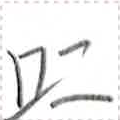 | noun | | wall |
| sue1 | 高 | | verb | | to be tall, to be high |
| iam1 gau2 | 口刀 | | noun | | tooth, teeth |
| su1 tu2 | 銭遊 | | verb | | to gamble |
| nin1 cet2 kaik | 紙机戦 | | noun | | the neen-cetkaik cards (traditional card games played in the Pekzep communities) |
| tui2 nui2 ak1 | 与学書 | | noun | | textbook |
| liok1 | 白 | | noun-modifier | | white |
| kot hue | 草処 |  | place word | | grassland, meadow |
| ai2 | 冠 | | noun | | hat, crown |
| lup1 | 鳥 | | noun | | bird |
| hup1 hop1 | 木手 | | noun | | tree branch |
| sy2 kua2 | 石筆 | | noun | | pencil |
| zau | 為 | | verb | | to make |
| pit1 | 震 |  | noun | | earthquake |
| tai | 咍 | | interjection | | oh my, wow, holy cow (used when being strongly emotional) |
| can2 mok1 | 識行 | | clause-taker | | to consider, to render |
| pok sy2 kua2 | 色石筆 | | noun | | colored pencil |
| taun1 aim2 | 多在 | | verb | | to be plentiful |
| lo // mut2 | 立 // 家 | // | verb-object compound | | to build a house |
| et2 sau2 pet2 | 一上星 | | temporal word | | last year |
| nun1 om2 | 十三 | | noun-modifier | numeral | thirteen |
| lot2 | 短 |  | verb | | to be short |
| kia1 | 日 | | noun | | the sun |
| cuau2 | 形 |  | noun | | shape |
| huat1 pau1 | 互別 | | verb | | to be different from each other |
| sau2 mok1 | 上行 | | verb | | to go up |
| kiak1 | 東 | 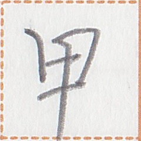 | noun | | east |
| tin1 | 己 | | noun | | oneself |
| in2 | 閉 | | verb | | to close |
| ta mok1 | 終行 | | verb | | to finish operating |
| ho2 | 骨 |  | noun | | bone |
| tat2 | 体 | | noun | | body |
| ma1 | 大 | | noun-modifier | | big, intense |
| let1 kik1 | 雪機 | | noun | | refrigerator |
| xo2 | 錘 | | verb | | to be heavy |
| tui2 mok1 | 与行 | | verb | | to carry |
| kot tia2 | 草茶 | | noun | | tea made from leaves |
| gak1 | 激 | | verb-modifier | | severely |
| ki1 kat1 | 男子 | | noun | | boy |
| yt2 | 輪 |  | noun | | ring |
| bet2 man1 | 圧字 | | verb | | to print |
| auk2 cy2 | 長席 | | noun | | long seat, bench, sofa |
| xi1 tak1 | 足衣 | | noun | | gaiter |
| muo1 | 止 | | verb | | to stop |
| bet2 man1 kik1 | 圧字機 | | noun | | printer |
| ik2 sau2 kia1 | 二上日 | | temporal word | | the day before yesterday |
| cuk2 ge | 人等 | | noun | | people |
| tei1 kaun1 | 叮車 | | noun | | bus |
| bo1 | 満 | | verb | | to fill |
| buo1 kaun1 | 包車 | | noun | | truck |
| ta1 | 目 | | noun | | eye |
| hon1 | 綿 |  | noun | | cotton |
| ho | 軟 | | verb | | to be soft |
| kuak1 kuak1 | 㕮㕮 |  | verb | | to cough |
| siet1 nua2 | 檸水 |  | noun | | lemon juice |
| tum1 sik2 | 甘蜜 |  | noun | | honey, sweet syrup |
| kia1 aik2 | 日光 | | noun | | sunlight |
| hup1 kot hop1 | 木草手 | | noun | | tree leaves |
| zep1 li1 | 言倉 | | noun | | dictionary |
| ak1 hy2 | 書棚 |  | noun | | bookshelf |
| hop1 | 手 | | verb | | to take, to bring |
| hy2 | 棚 | | noun | | shelf |
| lia1 | 琴 | | noun | | stringed instrument |
| bai2 | 糸 |  | noun | | thread. string |
| ie nan2 kak | 於何時 | | temporal word | interrogative | at what time |
| liok1 aik2 sy2 | 白光石 | | noun | | diamond (gemstone) |
| kun2 ak1 | 付書 | | noun | | notebook |
| li1 mut2 | 倉家 | | noun | | warehouse |
| gua2 | 弓 |  | noun | | bow (weapon) |
| iat1 hia1 | 冬心 | | place word | | Iatukiya (a large city in the Ai'ren Republic) |
| sam1 mok1 {ie N} | 急行 {於N} | {N} | verb | | to hurry to {a place} |
| ian1 | 生 | | verb | | to generate |
| bot1 | 凹 |  | noun | | hole (non-penetrating), indentation in a surface |
| lo // hup1 | 立 // 木 | // | verb-object compound | | to plant a tree |
| sui1 sit1 | 使術 | | noun | | way of using, use |
| tia2 su1 hue | 茶銭処 | | noun | | tea shop, tea house |
| sip1 tau2 | 国端 | | noun | | borders of a country |
| non1 | 悪 | | verb | | to hate |
| sue1 | 高 | | noun-modifier | | high |
| yn2 | 乎 | | interjection | | isn't it? / no? / doesn't he? |
| sep // mui1 | 享 // 魚 | // | verb-object compound | | to capture a fish |
| mi2 sep // mui1 | 引享 // 魚 | // | verb-object compound | | to fish with a fishing line |
| zui1 ak1 | 論書 | | noun | | academic paper, essay, dissertation |
| gak1 | 激 | | verb | | to be severe |
| huok2 | 黒 |  | noun-modifier | | black |
| xot1 | 季 | | temporal word | | season |
| tan1 tau2 | 南端 | 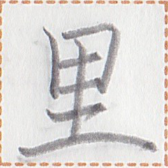 | place word | | south end |
| iam1 // lo1 | 口 // 煙 | //  | verb-object compound | | to smoke |
| naip2 kak | 労時 | | temporal word | | working time, laboring time |
| iam1 | 口 | | noun | | mouth |
| sep su1 dat2 | 享銭集 | | noun | | The Ministry of Economic Affairs |
| iak1 huap1 a sip1 | 律定之国 | | noun | | country ruled by law |
| hak2 | 北 |  | noun | | the north |
| sam1 sak2 | 急来 | | verb | | to come running |
| hup1 mit | 木橋 |  | noun | | wooden bridge |
| mit | 橋 | | noun | | bridge |
| ka1 xit2 | 此故 | | conjunction | | that is why |
| sa1 | 女 | | noun | | woman |
| kin2 to2 | 金樽 |   | noun | | metal can |
| su1 | 銭 | | noun suffix | | price of ... |
| tut1 kia1 | 毎日 | | temporal word | | every day |
| aip1 | 倒 |  | verb | | to fall down |
| niep1 | 杯 | | noun | | cup |
| be1 huep2 | 全地 | | noun-modifier | | worldwide |
| dui | 油 |  | noun | | oil |
| nan2 su1 | 何銭 | | noun | interrogative | how much money |
| ma1 num1 hue | 大守処 | | place word | | Numama (a large city in the Ai'ren Republic, located in Taupo Province) |
| xuo1 dat2 | 花集 | | noun | | bouquet |
| cet2 kaik | 机戦 | | noun | | the cetkaik chess (traditional chess-like game played in the Pekzep communities) |
| kut2 xy1 hue | 撃裁処 | | place word | | casino, recreation room, play room, chess club |
| zip1 // po1 | 失 // 道 | // | verb-object compound | | to get lost |
| dau2 | 虎 |  | noun | | tiger |
| na1 a | 静之 | | verb-modifier | | quietly |
| kaik dat2 | 戦集 | | noun | | army |
| sau2 mok1 | 上行 | | verb | | to be victorious |
| non1 | 悪 | | verb | | to be bad |
| ten1 ten1 | 混混 |  | verb | | to mix |
| at lit1 | 加入 {於N} | {N} | verb | | to add {into N} |
| kuo1 | 塩 |  | noun | | salt |
| tu2 gau2 | 遊刀 | | noun | | toy |
| ky1 hop1 | 右手 | | noun | | right hand |
| kut2 // giau1 | 撃 // 門 | // | verb-object compound | | to knock |
| tyn1 hop1 | 左手 | | noun | | left hand |
| tum1 | 甘 | | noun-modifier | | pretty, cute |
| sa1 tui2 nui2 cuk2 | 女与学人 | | noun | | female teacher |
| tua1 nua2 | 果水 | | noun | | juice, fruit juice |
| y | 亦 | | noun-conjunction | | or |
| hup1 hue | 木処 | | place word | | forest |
| tua1 hup1 | 果木 | | noun | | fruit tree |
| zo1 | 山 |  | noun | | mountain |
| uep | 穴 |  | verb | | to create a hole, to drill a hole, to punch a hole |
| hup1 o1 | 木平 |  | noun | | wooden board, wooden plate |
| lup1 kaun1 | 鳥車 | | noun | | airplane |
| huo2 pok | 墨色 |  | noun | | ink color |
| huok2 | 黒 | | verb | | to be black |
| niek1 | 連 |  | verb | | to connect |
| ian1 sit1 mut2 | 生術家 | | noun | | factory |
| li2 | 虫 | | noun | | insect, bug, amphibians, ... (any soft, roundish animal that are not people, birds, fish, or beasts) |
| dat2 | 集 | | verb | | for people to come together |
| huat1 dat2 | 互集 | | verb | | to get together |
| nun1 kit1 | 十百 | | noun-modifier | numeral | thousand |
| ue1 | 万 | | noun-modifier | numeral | ten thousand |
| tum1 sik2 li2 | 甘蜜虫 | | noun | | honeybee |
| ly taun1 a | 須多之 | | verb-modifier | | busily |
| xi1 ho2 | 足骨 | | noun | | leg bone |
| xom1 aim2 | 積在 |  | verb | | to be piled up |
| det tia2 su1 hue | 種茶銭処 | | noun | | coffee shop, coffee house |
| huat1 ta1 | 互目 | | verb | | to meet |
| ly hue1 kak | 須少時 | | temporal word | | free time |
| hui2 | 龍 | | name | | Hwee (name) |
| puat2 puak1 | 奮叫 | | verb | | to be angry |
| sa1 huok1 | 女輩 | | noun | | sister |
| kan1 | 火 | | verb | | to burn |
| huo2 sy2 | 墨石 | | noun | | coal |
| hup1 huo2 | 木墨 | | noun | | charcoal |
| sep // saup1 | 享 // 獣 | // | verb-object compound | | to hunt animals |
| co1 | 散 | | verb | | to be messy |
| ak1 | 書 | | name | | Ark (name) |
| o1 | 平 | | verb | | to be flat |
| huet aip1 | 闇倒 | | verb | | to pass out |
| guk2 | 受 | | verb-modifier | passive voice marker | to be done |
| sep mui1 cuk2 | 享魚人 | | noun | | fisherman |
| mui1 tuk2 | 魚網 |  | noun | | fishing net |
| hop1 sep // mui1 | 手享 // 魚 | // | verb-object compound | | to capture a fish |
| xiop1 | «足手» | «» | noun | pronounced in a single syllable | hands and legs; paws |
| huat1 hia1 kait | 互心善 | | verb | | to love each other |
| zep1 ba2 ba2 | 言汪汪 |  | verb | | for a dog to bark |
| zep1 ne2 ne2 | 言猫猫 | | verb | | to meow |
| kan1 mot2 | 火壊 | | verb | | to be destroyed by a fire |
| kot hup1 | 草木 | | noun | | vegetation, plants |
| auk2 mok1 | 長行 | | verb | | to grow |
| nua2 det | 水種 | | noun | | dew |
| kot hop1 | 草手 | | noun | | leaf, leaves |
| ni1 hup1 | 小木 | | noun | | bush |
| sia1 | 古 | | noun-modifier | | old |
| hem1 | 美 | | noun-modifier | | beautiful |
| zo1 nut2 | 山川 | | noun | | mountains and rivers |
| kat2 | 秋 |  | noun | | autumn, fall |
| nua2 sue1 | 水高 | | noun | | water level |
| kan1 | 火 | | noun | | fire |
| maun1 gua2 kauk2 | 馬弓兵 | | noun | | a warrior riding a horse and drawing a bow |
| gau2 a man1 | 刀之字 | | noun | | engraved words |
| kin2 o1 | 金平 | | noun | | metal plate |
| mut2 sin1 | 家名 | | noun | | family name |
| nua2 co1 | 水散 | | noun | | mist |
| sam1 ut2 mok1 | 急下行 | | verb | | to run down |
| aum2 po1 | 傾道 |  | noun | | slope |
| bot1 | 凹 | | verb | | to become dented |
| kaun1 giau1 | 車門 | | noun | | car door |
| ko1 | 覆 |  | verb | | to cover |
| lin | 清 | | name | | Lin (name) |
| nuok2 | 青 | | noun-modifier | | blue |
| cai1 pua2 | 嗅風 | | noun | | smell |
| yk2 kiak1 | 西東 | | noun | | the east and the west |
| hua1 | 挽 | | verb | | to grind |
| det | 種 | | noun | | bean without a pod |
| tua1 bait | 果膠 |  | noun | | fruit jam |
| kuo1 tuik1 | 塩味 | | verb | | to be salty |
| io1 | 直 | | noun | | ruler, straightedge |
| sau2 // hop1 | 上 // 手 | // | verb-object compound | | to raise hand |
| kan1 tua1 hup1 | 火果木 | | noun | | apple tree |
| uaip2 hei2 | 助貧 | | verb | | to help the poor |
| nin1 su1 | 紙銭 | | noun | | banknote |
| i2 zep1 | 反言 | | noun | | reply |
| gau2 aum2 | 刀傾 | | noun | | stair, staircase |
| lin | 清 | | noun-modifier | | purified, cleaned |
| kuot1 | 豆 |  | noun | | bean with a pod |
| kaik kauk2 | 戦兵 | | noun | | soldier |
| buo1 muak1 | 包船 | | noun | | cargo ship |
| nua2 bon2 | 水筒 |  | noun | | water pipe |
| ian1 | 生 | | post-verbial particle | | movement-marker of going out |
| io2 sik2 | 牛蜜 |  | noun | | milk |
| mok1 // po1 | 行 // 道 | // | verb-object compound | | to go following a trail |
| bon2 | 筒 | | noun | | pipe |
| huet | 闇 | | noun-modifier | | dark |
| hei2 su1 | 貧銭 | | verb | | to be poor |
| lok1 cuop2 | 笛声 | | noun | | sound of the flute |
| uep | 穴 | | noun | | hole |
| zuo1 bu1 | 片箱 | | quantity unit | | cubic tswoh (170 ml; 5.75 fl. oz.) |
| mok1 hia1 po1 | 行心道 | | noun-modifier | | adequate |
| ten1 kan1 | 混火 | | verb | | to mix and heat |
| ian1 | 生 | | verb | | to happen, to occur |
| mot2 | 壊 | | noun-modifier | | broken |
| huet kak | 闇時 | | temporal word | | night |
| gat2 kan1 | 祭火 |  | noun | | campfire |
| tuk2 | 網 | | noun | | net |
| hui2 lek1 | 龍絵 | | noun | | drawing of a dragon |
| kue cue | 硫俐 |   | noun | | sulfur |
| co1 lit1 | 散入 | | verb | | to dissolve |